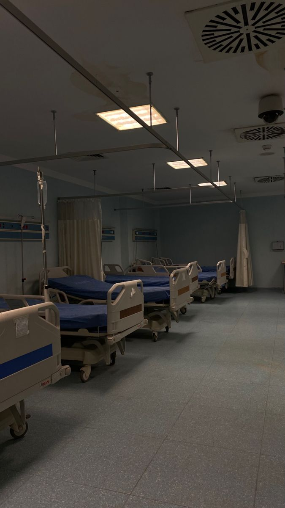

Pédiatrie
Des soins adaptés à la santé et au développement des nourrissons, des enfants et des adolescents.
Notre mission est de vous offrir des soins de qualité, dans le respect et la proximité, 24 h/24.
Prendre rendez-vousNos services répondent à vos besoins médicaux grâce à des équipes dédiées et à des installations modernes.
Des soins adaptés à la santé et au développement des nourrissons, des enfants et des adolescents.

Un accompagnement spécialisé pour améliorer l'alignement des dents et la santé bucco-dentaire.

Des examens d'imagerie médicale pour aider les professionnels à établir leur diagnostic.
Chez Santé-Plus, nous nous engageons à proposer des soins accessibles et de qualité, dans un environnement humain, sûr et accueillant. Notre équipe accompagne chaque patient avec respect, écoute et professionnalisme.
En savoir plus